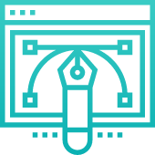
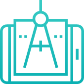

خدمات عمومی
خدماتی که تیم طراحی آرتریال ارائه میدهد
کدنویسی سمت سرور امن و قدرت مند
کدنویسی رابط کاربری استاندارد و بهینه

طراحی رابط کاربری زیبا و کاربر پسند
کدنویسی سمت سرور امن و قدرت مند

طراحی و توسعه اپلیکیشن های IOS
طراحی و توسعه اپلیکیشن های اندروید
برخی از مشتریان
برخی از شرکت خایی که افتخار همکاری با آنها را داشته ایم
نظرات مشتریان
چیزهایی که درباره ما میگن
مهندس کمیل حسن زاده
بنیان گذار یاس انیمیشن
حتما شما هم تا به حال با این مشکل مواجه شده اید که مقداری از موهایتان که بیرون از روسری قرار دارد بعد از مدتی نسبت به بقیه موها که در معرض آفتاب نیستند تغییر رنگ اندکی دهد. برای اینکار باید از شامپوهایی استفاده کرد که رنگ تمام مو را تثبیت کند. دانه های چرب و پر از فیبر گردو برای براق و یک دست شدن موها از قدیم به کار می رفته است. فیبرها یا پروتئین های کراتینی معلق در شامپو گردوی سوپراستار این فرصت را به شما می دهند تا موهایتان خود را بازیابی کنند و رنگی که روی آنها وجود دارد، تثبیت شود. شامپو کراتینه سوپراستار با طراحی جدید به سبد کالایی نفیس اضافه شد . اگر عادت دارید همیشه و به فاصله اندک موهایتان را رنگ کنید یا روزی دو یا چند بار برای فرم دادن به موهایتان از سشوار و یا دیگر وسایل حرارتی برای مو استفاده می کنید بهتر است در میان وعده های شست و شوی موها با شامپوهای تخصصی دیگر از شامپو کراتینه هم استفاده کنید. این شامپوها حاوی کراتین هیدرولیز شده هستند که به صورت یک لایه محافظتی روی مو می نشینند و از آن مراقبت می کنند. نرمی و لطافتی که بعد از استفاده از این شامپو احساس می کنید در کنار افزایش درخشندگی از اثرات استفاده از این شامپو است.
مهندس علی صفاری
بنیان گذار آقای متریال
حتما شما هم تا به حال با این مشکل مواجه شده اید که مقداری از موهایتان که بیرون از روسری قرار دارد بعد از مدتی نسبت به بقیه موها که در معرض آفتاب نیستند تغییر رنگ اندکی دهد. برای اینکار باید از شامپوهایی استفاده کرد که رنگ تمام مو را تثبیت کند. دانه های چرب و پر از فیبر گردو برای براق و یک دست شدن موها از قدیم به کار می رفته است. فیبرها یا پروتئین های کراتینی معلق در شامپو گردوی سوپراستار این فرصت را به شما می دهند تا موهایتان خود را بازیابی کنند و رنگی که روی آنها وجود دارد، تثبیت شود.
مهندس کمیل حسن زاده
بنیان گذار یاس انیمیشن
حتما شما هم تا به حال با این مشکل مواجه شده اید که مقداری از موهایتان که بیرون از روسری قرار دارد بعد از مدتی نسبت به بقیه موها که در معرض آفتاب نیستند تغییر رنگ اندکی دهد. برای اینکار باید از شامپوهایی استفاده کرد که رنگ تمام مو را تثبیت کند. دانه های چرب و پر از فیبر گردو برای براق و یک دست شدن موها از قدیم به کار می رفته است. فیبرها یا پروتئین های کراتینی معلق در شامپو گردوی سوپراستار این فرصت را به شما می دهند تا موهایتان خود را بازیابی کنند و رنگی که روی آنها وجود دارد، تثبیت شود. شامپو کراتینه سوپراستار با طراحی جدید به سبد کالایی نفیس اضافه شد . اگر عادت دارید همیشه و به فاصله اندک موهایتان را رنگ کنید یا روزی دو یا چند بار برای فرم دادن به موهایتان از سشوار و یا دیگر وسایل حرارتی برای مو استفاده می کنید بهتر است در میان وعده های شست و شوی موها با شامپوهای تخصصی دیگر از شامپو کراتینه هم استفاده کنید.
مهندس علی صفاری
بنیان گذار آقای متریال
حتما شما هم تا به حال با این مشکل مواجه شده اید که مقداری از موهایتان که بیرون از روسری قرار دارد بعد از مدتی نسبت به بقیه موها که در معرض آفتاب نیستند تغییر رنگ اندکی دهد.
مهندس کمیل حسن زاده
بنیان گذار یاس انیمیشن
حتما شما هم تا به حال با این مشکل مواجه شده اید که مقداری از موهایتان که بیرون از روسری قرار دارد بعد از مدتی نسبت به بقیه موها که در معرض آفتاب نیستند تغییر رنگ اندکی دهد. برای اینکار باید از شامپوهایی استفاده کرد که رنگ تمام مو را تثبیت کند. دانه های چرب و پر از فیبر گردو برای براق و یک دست شدن موها از قدیم به کار می رفته است. فیبرها یا پروتئین های کراتینی معلق در شامپو گردوی سوپراستار این فرصت را به شما می دهند تا موهایتان خود را بازیابی کنند و رنگی که روی آنها وجود دارد، تثبیت شود. شامپو کراتینه سوپراستار با طراحی جدید به سبد کالایی نفیس اضافه شد . اگر عادت دارید